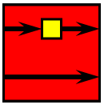
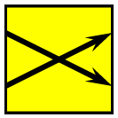
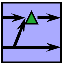
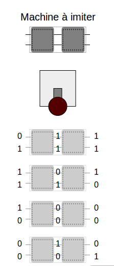
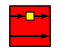
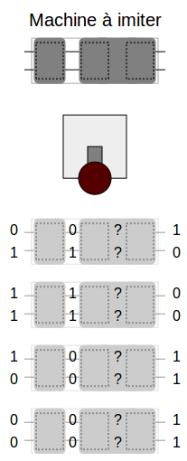
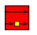
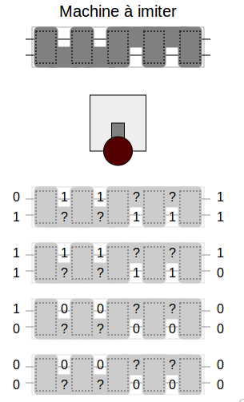
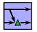

Vous avez trouvé une machine qui transforme les chiffres. Vous savez qu'elle est constituée de 2 3 5 blocs, mais vous ne savez pas lesquels. Construisez une machine qui permet d'obtenir les mêmes résultats.
Placez un bloc à la fois dans votre machine pour voir son effet, et comparez avec la machine à imiter.
|  | change le chiffre de haut et laisse celui de bas inchangé. |
|  | échange le chiffre du haut avec celui du bas. |
|  | remplace le chiffre du haut par le produit des deux et laisse celui de bas inchangé. |
| remplace le chiffre du haut par le produit des deux et laisse celui de bas inchangé. |
 On démarre la machine à imiter et on étudie son comportement : le bloc de gauche laisse le chiffre de bas inchangé. Le seul bloc qui a cet effet est , que nous plaçons dans la partie gauche de notre machine. Le bloc de droite échange entre eux les chiffres de haut et de bas, donc il faut placer un bloc . Et voilà nous avons reconstitué la machine :
 On démarre la machine à imiter et on voit le comportement du premier bloc : il garde le chiffre de bas inchangé. Les seuls blocs qui correspondent sont et . On essaie les deux et le seul qui convient est . On regarde ensuite l'effet des deux blocs suivants : ils transforment au même temps le chiffre de haut et celui de bas dans leurs opposés (1 devient 0 et 0 devient 1). Pour cela on place et  dans le deuxième et troisième bloc (l'ordre ne compte pas). La solution est donc :
 On démarre la machine à imiter et on voit une partie du comportement du premier bloc : le chiffre de bas est copié et placé en haut. Le seul bloc qui correspond à ce comportement est . Les troisième et cinquième blocs copient eux aussi les chiffres en diagonale donc ils correspondent eux aussi à . Le deuxième bloc garde le chiffre de haut inchangé donc il est soit le bloc identité (qui ne change rien, on ne place aucun bloc dans la machine) soit un des blocs ou . Le même raisonnement s'applique au quatrième bloc : il garde le chiffre de bas inchangé donc il est soit le bloc identité soit un des blocs ou . En essayant ces possibilités on trouve la solution :